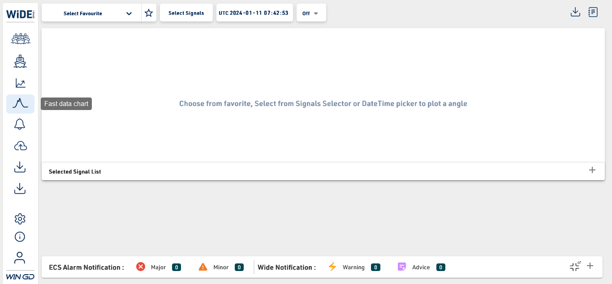
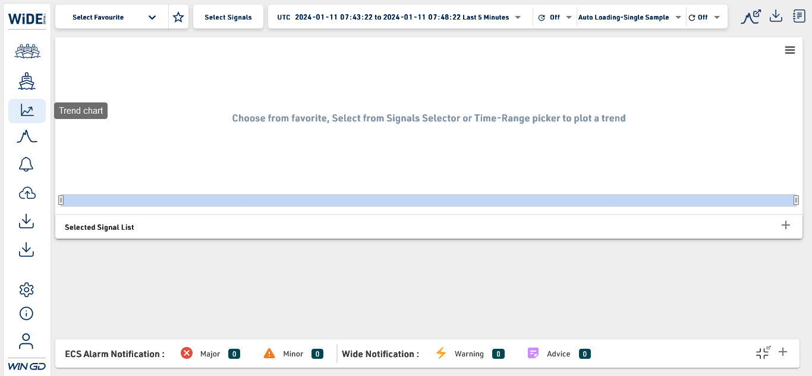

Started
Jan 11, 2024 01:03:57 pm
Ended
Jan 11, 2024 01:19:01 pm
Features Passed
7
Features Failed
4
Features
Scenarios
Steps
Timeline
System/Environment
| Name | Value |
|---|---|
| ProjectName | Serenity BDD Test |
| Browser | firefox |
| os | Windows |
-
About Screen
1:03:58 pm / 00:01:25:145 Pass
About Screen
01.11.2024 1:03:58 pm 01.11.2024 1:05:23 pm 00:01:25:145 · #test-id=1PassTo test the About screen launching in the WinGD ApplicationGiven Select About icon form Left side menu -
Alarm List
1:05:24 pm / 00:01:18:217 Fail
Alarm List
01.11.2024 1:05:24 pm 01.11.2024 1:06:42 pm 00:01:18:217 · #test-id=26FailTo test the Alarm screen in the WinGD ApplicationGiven Select Alarmlist icon form Left side menustarter.Cloud.Stepdefinitions.Alarmlisttest.beforeorafter(io.cucumber.java.Scenario)To_test_the_Alarm_screen_in_the_WinGD_Application -
Login to WinGD Application
1:06:42 pm / 00:01:17:305 Pass
Login to WinGD Application
01.11.2024 1:06:42 pm 01.11.2024 1:07:59 pm 00:01:17:305 · #test-id=51PassTo test the Login scenario to the WinGD ApplicationGiven Login to the WinGD Application -
Data Reporting
1:07:59 pm / 00:01:23:281 Pass
Data Reporting
01.11.2024 1:07:59 pm 01.11.2024 1:09:22 pm 00:01:23:281 · #test-id=76PassTo test the Data Reporting screen launching in the WinGD ApplicationGiven Select Data Reporting icon form Left side menu -
Data Downloader screen
1:09:22 pm / 00:01:23:716 Pass
Data Downloader screen
01.11.2024 1:09:22 pm 01.11.2024 1:10:46 pm 00:01:23:716 · #test-id=101PassTo test the Data Downloader screen in the WinGD ApplicationGiven Select Data downloader icon form Left side menu -
Engine Overview
1:10:46 pm / 00:01:23:248 Pass
Engine Overview
01.11.2024 1:10:46 pm 01.11.2024 1:12:09 pm 00:01:23:248 · #test-id=126PassTo test the Engine Overview screen launching in the WinGD ApplicationGiven Select Engine Overview icon form Left side menu -
Fast Data Chart
1:12:09 pm / 00:01:23:615 Fail
Fast Data Chart
01.11.2024 1:12:09 pm 01.11.2024 1:13:33 pm 00:01:23:615 · #test-id=151FailTo test the Fast Data Chart screen in the WinGD ApplicationGiven Select Fastdatachart icon form Left side menustarter.Cloud.Stepdefinitions.Fastdatacharttest.beforeorafter(io.cucumber.java.Scenario)To_test_the_Fast_Data_Chart_screen_in_the_WinGD_Application -
Fast Data Binfile Uploader
1:13:33 pm / 00:01:24:854 Pass
Fast Data Binfile Uploader
01.11.2024 1:13:33 pm 01.11.2024 1:14:58 pm 00:01:24:854 · #test-id=176PassTo test the Fast Data bin file uploader screen in the WinGD ApplicationGiven Select Fastdata uploader icon form Left side menu -
Logout
1:14:58 pm / 00:01:17:970 Fail
Logout
01.11.2024 1:14:58 pm 01.11.2024 1:16:16 pm 00:01:17:970 · #test-id=201FailTo test the Logout scenario to the WinGD ApplicationGiven Select Logout icon form Left side menustarter.Cloud.Stepdefinitions.Logouttest.beforeorafter(io.cucumber.java.Scenario)To_test_the_Logout_scenario_to_the_WinGD_Application -
Settings
1:16:16 pm / 00:01:23:119 Pass
Settings
01.11.2024 1:16:16 pm 01.11.2024 1:17:39 pm 00:01:23:119 · #test-id=226PassTo test the Settings screen in the WinGD ApplicationGiven Select Settings icon form Left side menu -
Trendchart
1:17:39 pm / 00:01:22:401 Fail
Trendchart
01.11.2024 1:17:39 pm 01.11.2024 1:19:01 pm 00:01:22:401 · #test-id=251FailTo test the Trendchart screen in the WinGD ApplicationGiven Select Trendchart icon form Left side menustarter.Cloud.Stepdefinitions.Trendcharttest.beforeorafter(io.cucumber.java.Scenario)To_test_the_Trendchart_screen_in_the_WinGD_Application
-
org.openqa.selenium.NoSuchElementException
4 tests
org.openqa.selenium.NoSuchElementException
4 failedStatus Timestamp TestName Fail 13:05:24 pm Given Select Alarmlist icon form Left side menu Alarm List.To test the Alarm screen in the WinGD Application.Given Select Alarmlist icon form Left side menuFail 13:12:09 pm Given Select Fastdatachart icon form Left side menu Fast Data Chart.To test the Fast Data Chart screen in the WinGD Application.Given Select Fastdatachart icon form Left side menuFail 13:14:58 pm Given Select Logout icon form Left side menu Logout.To test the Logout scenario to the WinGD Application.Given Select Logout icon form Left side menuFail 13:17:39 pm Given Select Trendchart icon form Left side menu Trendchart.To test the Trendchart screen in the WinGD Application.Given Select Trendchart icon form Left side menu